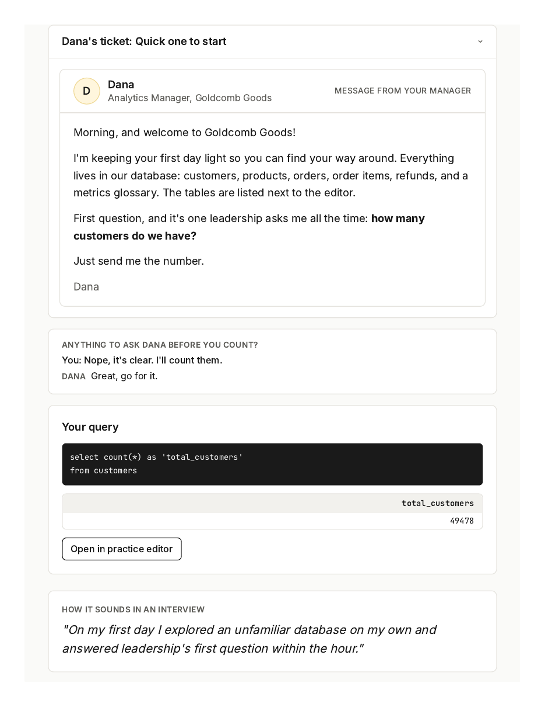
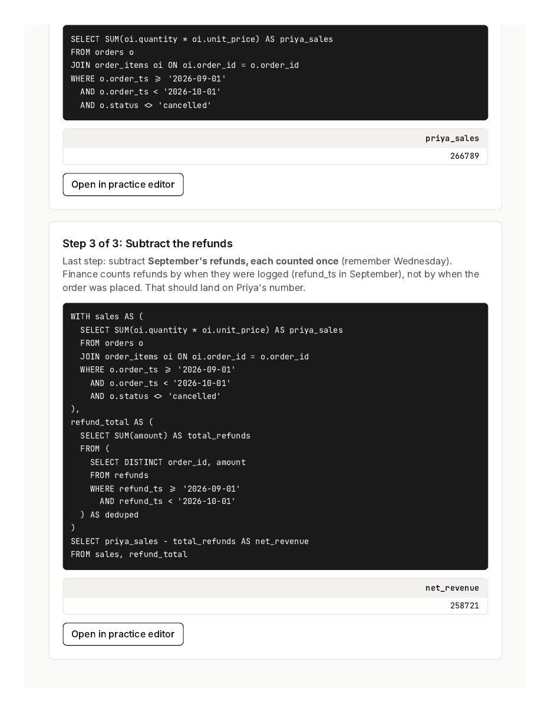
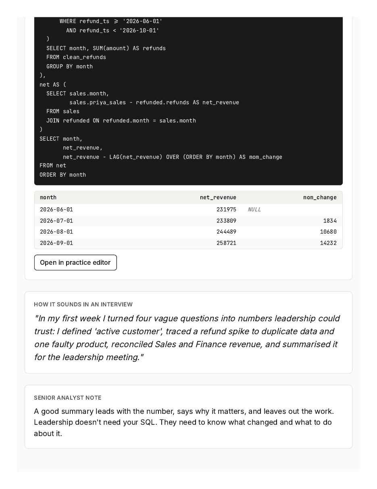

Analyst Week: Junior Data Analyst Simulation

Analyst Hive · Completed November 2026. Goldcomb Goods is a fictional company in a simulation — not employment. Performance review verdict: "Ready for week two."
What I did: Over five days I worked a week of tickets as the junior analyst for Goldcomb Goods, a fictional e-commerce company. Each day brought a new question from a different stakeholder, and I had to figure out what the data actually said — not just run a query and hand back a number.
Why it matters: The work caught a real data-quality problem and settled a disagreement between two departments, and it ended in a leadership briefing with clear recommendations.
Tools / Data / Steps: Tools: SQL. Data: the company's orders, customers, and refunds data. Steps: define the question and the rules before counting; validate the data before trusting it; rebuild disputed numbers from raw data; present the findings as a short report with recommendations.
Key findings:
- Defined what "active customer" meant before counting, excluding internal test accounts: 20,100 active customers.
- Caught a data quality problem: refunds looked spiked, but a system migration had logged refunds twice for the same orders, and the Drip-Free Glass Honey Dispenser was wrongly taking the blame.
- Reconciled two departments' conflicting September revenue numbers by rebuilding both from raw data: Sales reported $299,482 gross revenue before refunds, and Finance reported $258,721 net revenue after refunds — both were right; they measure different things.
- Briefed leadership with three findings: net revenue was $1.2m in May, up from $1.0m in April, with refunds at 2.1% of gross revenue; the Drip-Free Glass Honey Dispenser costs $30,000 a month, with 47% of its September revenue refunded — recommendation: fix the leaking lid; and revenue was shifting from honey to non-honey — honey fell from $1.1m in January to $0.5m in September while non-honey grew from $0.2m to $2.9m, and September net revenue was 84% non-honey.
Skills: SQL, data cleaning, data validation, stakeholder communication.
Analyst Week certificate — Credential ID 6JXMRHU4ML, issued by Analyst Hive.
Work samples:




